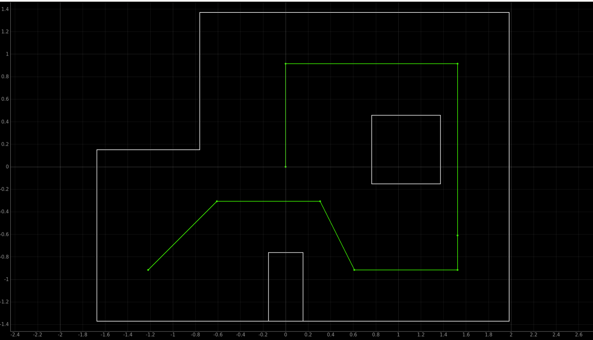

Lab 12: Path Planning and Execution
Lab 12
Goals
The goal of this lab was to integrate waypoint-based path planning, BLE communication, onboard motion control, and selected Bayes localization to make the robot navigate through a predefined path in the mapped environment.
Waypoint Path and Overall Strategy
The predefined waypoints were used directly as the high-level path for this lab. The robot started from
(-4, -3) and followed the waypoint sequence until it reached the final target near
(0, 0). The green line in Figure 1 shows the planned route, while the white lines show the
walls and obstacles in the mapped environment.

I implemented an offboard waypoint-following strategy. The Python notebook stored the waypoint list, computed the required heading and distance for each segment, and sent the corresponding BLE commands to the robot. The Artemis board then executed the low-level motion onboard, including IMU-based turning and forward movement. This structure allowed the high-level planning logic to remain easy to debug in Python while keeping the time-sensitive motor control on the robot.
WAYPOINTS = [
(-4, -3),
(-2, -1),
(1, -1),
(2, -3),
(5, -3),
(5, -2),
(5, 3),
(0, 3),
(0, 0),
]For each pair of consecutive waypoints, the robot used a turn-and-move primitive. First, the notebook computed the desired heading from the current waypoint to the next waypoint. Then it sent a turn command to the robot. After the robot completed the turn, it moved forward toward the next waypoint and stopped before starting the next segment. Selected Bayes localization was also included at key waypoints to reduce accumulated pose error.
Robot Implementation and Tuning Process
Arduino code modification
The Arduino program served as the onboard low-level motion controller. It received BLE commands from the Python
notebook and executed the corresponding motor actions on the robot. The main commands used in this lab were
ORIEN_PID_CONTROL for turning, FORWARD for forward motion, and STOP for
stopping the robot. This design allowed the Python notebook to handle high-level waypoint planning, while the
Artemis board handled time-sensitive motor execution.
enum CommandTypes {
GET_TOF_IMU,
PID_POSITION_CONTROL,
ORIEN_PID_CONTROL,
FORWARD,
STOP,
REQUEST_DATA,
MOVE_TOF_DELTA,
};For orientation control, the robot used IMU/DMP-based yaw feedback. The laptop sent a relative target angle, and the Artemis board ran an onboard PID loop to rotate the robot in place. At the beginning of each turn, the current yaw was saved as the zero reference. The robot then continuously compared the current yaw with the target yaw and adjusted the motor output until the yaw error became small enough.
case ORIEN_PID_CONTROL:
{
float Kp, Ki, Kd, target_delta_yaw;
bool success = true;
success &= robot_cmd.get_next_value(Kp);
success &= robot_cmd.get_next_value(Ki);
success &= robot_cmd.get_next_value(Kd);
success &= robot_cmd.get_next_value(target_delta_yaw);
if (!success) {
return;
}
stop();
delay(200);
float yaw_zero = 0.0f;
read_dmp_yaw_latest(yaw_zero);
float target_yaw = wrap_angle_deg(target_delta_yaw);
unsigned long start_time = millis();
while (millis() - start_time < 5000) {
float yaw_abs_now;
if (!read_dmp_yaw_latest(yaw_abs_now)) {
continue;
}
float current_yaw = wrap_angle_deg(yaw_abs_now - yaw_zero);
float yaw_rate = get_gyro_z_dps();
int u = pid_orientation_control(
Kp, Ki, Kd,
current_yaw,
target_yaw,
yaw_rate
);
spin_in_place(u);
float err = wrap_angle_deg(target_yaw - current_yaw);
if (fabs(err) <= 5.0f && fabs(yaw_rate) < 20.0f) {
break;
}
}
stop();
break;
}This turning method was more reliable than open-loop timed turning because the robot used yaw feedback to close the loop. I also included a time cutoff in the turning loop. This prevented the robot from being stuck in the PID loop if the desired angle could not be reached exactly due to wheel slip or sensor noise.
I also modified the FORWARD command so that it could accept both a motor speed and a duration.
This change was necessary for the pulsed forward strategy used later in the Python notebook. Instead of sending
one long forward command, the notebook could send multiple short forward pulses, each with a limited duration.
case FORWARD:
{
int speed;
int duration_ms = 300;
bool success = true;
success &= robot_cmd.get_next_value(speed);
if (!success) {
return;
}
bool got_duration = robot_cmd.get_next_value(duration_ms);
if (!got_duration) {
duration_ms = 300;
}
if (duration_ms < 0) {
duration_ms = 0;
}
if (duration_ms > 500) {
duration_ms = 500;
}
forward(speed);
delay(duration_ms);
stop();
tx_estring_value.clear();
tx_estring_value.append("FORWARD_DONE|");
tx_estring_value.append(speed);
tx_estring_value.append("|");
tx_estring_value.append(duration_ms);
tx_characteristic_string.writeValue(tx_estring_value.c_str());
break;
}
The command format became speed|duration_ms. The duration was capped at 500 ms as a safety
mechanism. This was important during debugging because it prevented the robot from continuing to drive forward
for too long if a command was not tuned correctly. This modification made the forward movement safer and easier
to adjust experimentally.
The original ToF-based distance controller was kept as an optional local movement primitive. It computes a target ToF value by subtracting the desired forward displacement from the initial ToF reading. However, during waypoint navigation, ToF readings did not always correspond to the actual displacement along the planned path.
int initial_tof = read_tof_mm();
int target_tof = initial_tof - distance_mm;
if (target_tof < 60) {
target_tof = 60;
}This ToF-based method worked only when the robot had a stable wall reference in front of it. If the robot faced open space, a corner, or an angled surface, the ToF value could change unpredictably. Therefore, the final path execution relied mainly on waypoint-based pulsed forward commands and selected Bayes correction.
Python code modification and tuning process
The Python notebook implemented the high-level waypoint planner. It stored the waypoint list, computed the
desired heading and distance for each segment, and sent BLE commands to the robot. In my coordinate convention,
0° points along the positive y direction, and 90° points along the positive x direction.
Therefore, I used atan2(dx, dy) to compute the desired heading.
def wrap_to_180(angle_deg):
while angle_deg > 180:
angle_deg -= 360
while angle_deg < -180:
angle_deg += 360
return angle_deg
def execute_segment(p0, p1, previous_heading=0.0, segment_id=None):
x0, y0 = p0
x1, y1 = p1
dx = x1 - x0
dy = y1 - y0
# Heading convention:
# 0 deg = +y direction, 90 deg = +x direction
desired_heading = math.degrees(math.atan2(dx, dy))
turn_angle = wrap_to_180(desired_heading - previous_heading)
distance_cells = math.sqrt(dx * dx + dy * dy)
distance_mm = distance_cells * CELL_SIZE_MM
send_turn(turn_angle)
time.sleep(0.4)
send_stop()
time.sleep(0.3)
send_move_pulsed(distance_mm)
send_stop()
time.sleep(0.2)
return desired_headingThis function was the basic motion primitive for one waypoint segment. The notebook first computed the desired heading and relative turn angle, then sent the turning command to the robot. After the turn finished, the robot moved forward using the pulsed forward motion function. The returned heading was used as the previous heading for the next segment.
During early testing, I found that one long continuous forward command could easily cause overshoot or collision. This was especially true when the battery voltage changed or when the robot entered the longer segments in the second half of the path. To make the motion more controllable, I replaced long forward commands with short forward pulses.
FORWARD_PWM_SAFE = 55
ROBOT_SPEED_MM_S_SAFE = 250.0
MAX_PULSE_MS = 500
PULSE_GAP_S = 0.05
DISTANCE_SCALE = 0.55
def send_forward_pulse(speed=FORWARD_PWM_SAFE, duration_ms=300):
duration_ms = int(min(duration_ms, MAX_PULSE_MS))
duration_ms = max(0, duration_ms)
payload = f"{int(speed)}|{duration_ms}"
ble.send_command(CMD.FORWARD, payload)
time.sleep(duration_ms / 1000.0 + 0.15)
send_stop()
time.sleep(PULSE_GAP_S)
def send_move_pulsed(distance_mm):
commanded_distance = max(0.0, distance_mm * DISTANCE_SCALE)
remaining = commanded_distance
while remaining > 0:
max_pulse_distance = ROBOT_SPEED_MM_S_SAFE * MAX_PULSE_MS / 1000.0
pulse_distance = min(remaining, max_pulse_distance)
pulse_ms = int(1000.0 * pulse_distance / ROBOT_SPEED_MM_S_SAFE)
send_forward_pulse(FORWARD_PWM_SAFE, pulse_ms)
remaining -= pulse_distance
send_stop()
The parameter DISTANCE_SCALE was tuned experimentally. Since the robot does not have wheel encoders,
the same PWM and pulse duration do not always produce the same physical displacement. The actual travel distance
depends on battery voltage, wheel slip, floor friction, and motor response. The pulsed strategy made the robot
safer during testing, while DISTANCE_SCALE allowed me to correct the average distance error.
After the basic pulsed motion worked, I tuned the path segment by segment. The first half of the route became
very accurate with the global parameters above. However, the segment from (2, -3) to
(5, -3) consistently moved slightly too far. Instead of changing the global distance scale, I applied
a local correction only to this problematic segment.
# Segment 4: (2,-3) -> (5,-3)
# This segment tended to overshoot, so I used a smaller local scale.
old_scale_seg4 = DISTANCE_SCALE
DISTANCE_SCALE = old_scale_seg4 * 0.85
prev_heading = execute_segment(
(2, -3),
(5, -3),
previous_heading=prev_heading,
segment_id=4
)
DISTANCE_SCALE = old_scale_seg4This local tuning step was important because the earlier segments were already accurate. Reducing the global distance scale would have made those segments too short. Applying the correction only to Segment 4 improved the final path without affecting the successful parts.
The later part of the route was more challenging because it contained long straight segments. In particular,
(5, -2) -> (5, 3) and (5, 3) -> (0, 3) amplified small heading errors. I first tried
one-cell subsegments, which were accurate but too slow. The final version used approximately two-cell
subsegments, together with a mildly conservative distance scale and shorter pulse gaps.
old_distance_scale = DISTANCE_SCALE
old_max_pulse_ms = MAX_PULSE_MS
old_pulse_gap_s = PULSE_GAP_S
# Mild conservative mode for later long segments
DISTANCE_SCALE = old_distance_scale * 0.90
MAX_PULSE_MS = min(old_max_pulse_ms, 600)
PULSE_GAP_S = 0.03
long_segment_6_points = [
(5, -2),
(5, 0),
(5, 2),
(5, 3),
]
for k in range(len(long_segment_6_points) - 1):
prev_heading = execute_segment(
long_segment_6_points[k],
long_segment_6_points[k + 1],
previous_heading=prev_heading,
segment_id=f"6.{k+1}"
)
send_stop()
time.sleep(0.35)
# Restore original parameters
DISTANCE_SCALE = old_distance_scale
MAX_PULSE_MS = old_max_pulse_ms
PULSE_GAP_S = old_pulse_gap_sThis tuning process balanced speed and accuracy. One-cell stepping made the robot very accurate but too slow, while commanding the full long segment at once caused large overshoot. The two-cell subsegment strategy was a practical compromise for the final video run.
Selected Bayes localization
To reduce accumulated pose error, I also integrated selected Bayes localization into the path execution framework. Instead of localizing after every waypoint, I used localization flags to decide when the robot should stop and update its pose estimate. This followed the idea that localization is most useful after segments where dead-reckoning error is likely to accumulate.
LOCALIZE_FLAGS = [
False, # waypoint 0: (-4,-3), start
True, # waypoint 1: (-2,-1)
False, # waypoint 2: (1,-1)
False, # waypoint 3: (2,-3)
False, # waypoint 4: (5,-3)
True, # waypoint 5: (5,-2)
True, # waypoint 6: (5,3)
True, # waypoint 7: (0,3)
True, # waypoint 8: (0,0)
]
if LOCALIZE_FLAGS[i + 1]:
localized_pose = run_bayes_localization(current_pose_hint=current_pose)
current_pose = (
target_xy[0],
target_xy[1],
localized_pose[2]
)In the final implementation, Bayes localization was used conservatively. The heading estimate from the Bayes result was used to correct the robot's orientation estimate, while the x-y position was snapped to the target waypoint. This avoided an issue observed during testing: if the noisy Bayes x-y estimate was used directly, the computed distance for the next segment could become too large and cause the robot to move too far.
def execute_segment_from_pose(current_pose, target_xy, segment_id=None):
x0, y0, previous_heading = current_pose
x1, y1 = target_xy
dx = x1 - x0
dy = y1 - y0
desired_heading = math.degrees(math.atan2(dx, dy))
turn_angle = wrap_to_180(desired_heading - previous_heading)
distance_cells_raw = math.sqrt(dx * dx + dy * dy)
distance_mm_raw = distance_cells_raw * CELL_SIZE_MM
if segment_id is not None and 1 <= segment_id < len(WAYPOINTS):
nominal_p0 = WAYPOINTS[segment_id - 1]
nominal_p1 = WAYPOINTS[segment_id]
ndx = nominal_p1[0] - nominal_p0[0]
ndy = nominal_p1[1] - nominal_p0[1]
nominal_distance_mm = math.sqrt(ndx * ndx + ndy * ndy) * CELL_SIZE_MM
DISTANCE_CAP_RATIO = 1.15
max_allowed_distance_mm = DISTANCE_CAP_RATIO * nominal_distance_mm
distance_mm = min(distance_mm_raw, max_allowed_distance_mm)
else:
distance_mm = distance_mm_raw
send_turn(turn_angle)
time.sleep(0.4)
send_stop()
time.sleep(0.3)
send_move_pulsed(distance_mm)
send_stop()
time.sleep(0.3)
estimated_pose = (x1, y1, desired_heading)
return estimated_poseThe distance cap made the Bayes correction more stable on the physical robot. It allowed the current pose and heading to be corrected, but prevented a noisy localization estimate from causing an unexpectedly long motion command. Overall, the final implementation was the result of repeated testing: pulsed forward motion improved safety, segment-specific scale correction improved local accuracy, two-cell subsegments improved the later long portions of the path, and selected Bayes localization helped reduce accumulated orientation error.
Results
Early failed trial
Before the final successful run, I tested several earlier versions of the path execution strategy. Video 1
shows one representative failed trial. In this attempt, the robot reached the area near (5, 3),
but its stopping position was too far forward. As a result, when it tried to execute the next segment from
(5, 3) to (0, 3), the robot did not have enough clearance for the left turn and
collided with the wall.
(5, 3), causing a wall collision
during the following left turn toward (0, 3).
This failure was useful because it revealed that the main problem was not the waypoint sequence itself, but the
accumulated execution error in the later part of the route. The front half of the path was already fairly accurate,
but long straight movements in the second half caused small distance and heading errors to accumulate. Once the
robot stopped too far forward near (5, 3), the next turn became unsafe.
To address this issue, I modified the later part of the route. First, I avoided commanding the full long segments as one motion. Instead, I split the long movements into shorter subsegments. Second, I used a mildly conservative distance scale for the later segments so that the robot would not overshoot as much. Third, I locally reduced the distance scale for segments that repeatedly moved too far. These changes made the later turns safer and improved the repeatability of the full path.
Final successful run
Video 2 shows the final successful run. In this version, the robot completed the full waypoint route without
manual assistance, without wall collision, and stopped near the final target (0, 0). The stopping
accuracy was better in the first half of the route, where the waypoint distances were shorter and the accumulated
error was smaller. In the second half, the robot still had small deviations from the ideal waypoint locations,
but the adjusted segment-specific parameters and shorter subsegments prevented the robot from colliding with the
walls.
(0, 0).
Although the robot did not stop exactly at every ideal waypoint, the final run satisfied the main objective of the lab. The robot followed the planned waypoint sequence, completed the full path, avoided collisions, and finished close to the final target. Therefore, I considered this run a successful path planning and execution demonstration.
Discussion
The early failed trial showed that the main challenge was accumulated execution error in the later part of the route.
The robot stopped too far forward near (5, 3), so the following left turn toward (0, 3)
did not have enough clearance and resulted in a wall collision. This happened because the later straight segments
were longer, and small heading or distance errors were amplified over several grid cells. Since the robot did not
have wheel encoders, forward displacement depended on PWM, command duration, battery voltage, wheel slip, and floor
friction.
To solve this problem, I kept the original tuned parameters for the accurate front half of the route, applied a
local distance-scale reduction to segments that tended to overshoot, and split the longer later segments into
shorter subsegments with a mildly conservative setting. Selected Bayes localization was also used conservatively:
the heading estimate was used for orientation correction, while the x-y position was snapped to the current target
waypoint to keep the next commanded distance stable. With these changes, the final run completed the full route
without manual assistance or collision and stopped near (0, 0), although small deviations from the
ideal waypoint locations remained in the later part of the path.
Appendix
I would like to thank Zenan Shao for lending me his robot to complete this lab assignment. His Lab 12 write-up inspired my overall thinking about offboard waypoint-following, but my final method was not the same as his. I developed my own motion execution strategy, completed my own parameter tuning and tests, and recorded the final demonstration using my own implementation.
I used AI tools to support parts of this lab, mainly for webpage/HTML formatting, minor code edits and debugging, and polishing the written explanations for clarity and conciseness. Throughout the assignment, I verified the suggestions against the lab requirements, tested changes on my own setup, and made final design and implementation decisions independently based on my own understanding.
At the end of this course, I would like to sincerely thank Professor E. Farrell Helbling and the TA team, especially Julie, for their patient guidance and support. Through this course, I gained hands-on experience with embedded systems, BLE communication, sensor integration, feedback control, localization, and robot navigation. It was a challenging but very rewarding and enjoyable learning experience.